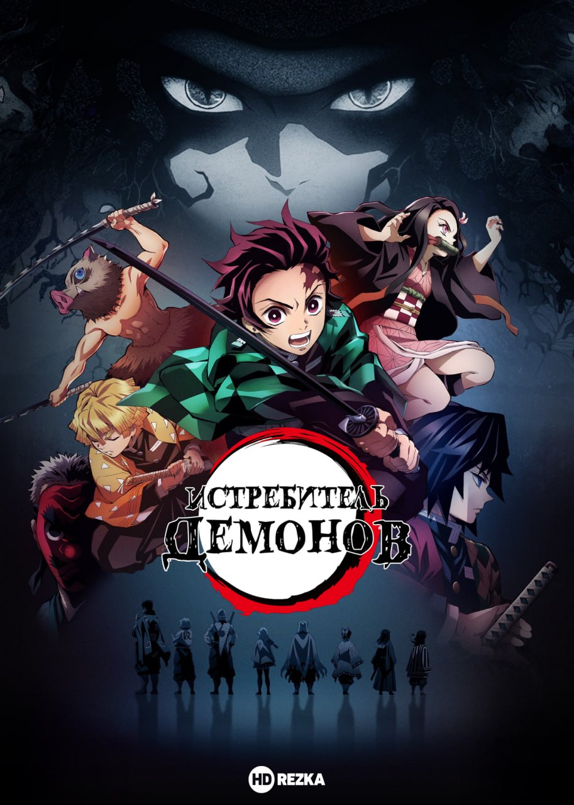

|

Demon slayer
Рейтинг: 8.2/10
|
| Жарық көрген жылы: |
2016 |
| Ел: |
Жапония |
| Аутор: |
Коехару Готогэ |
| Режиссер: |
Харуо Стоадзаеи |
| Жанр: |
Боевик, мистика |
Кішкене информация:
| |
Бір күні негізгі кейіпкер - жас саудагер Танжеро Камадо өзінің көмірін сатып болғаннан кейін, ауа-райдың қолайсыздығына байланысты қалада қалуға мәжбүр болады. Үйіне оралған соң анасының, бауырларының шайтандар шабуылынан кейінгі өлі денелерін байқайды. Ол басында шайтандардың бар екеніне күмәнмен қарайтын. Осы шайтан шабуылынан кейін оның тек Нэдзуко атты қарындасы аман қалады. Алайда шайтан тістеп, қанымен араласып олда шайтандардың қатарына қосылады, соның өзінде адамдық ойлау қабілетін сақтап қалды. Қарындасын бұл бәледе қалдырғысы келмеген Танжеро шайтан торушысына айналып, шайтандардан Нэдзуконы адамға айналдырудың жолын іздеуге кіріседі. |
|